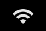
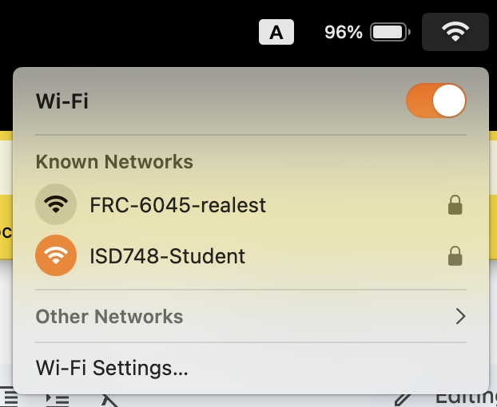
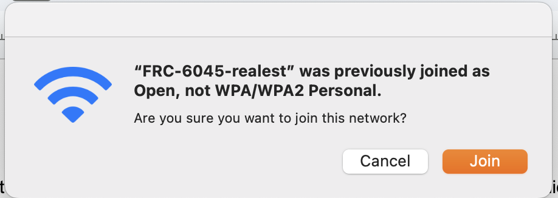
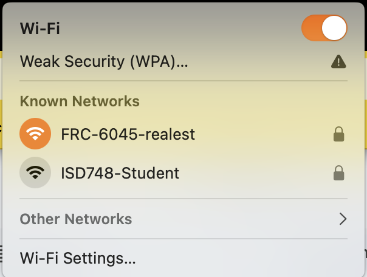

Home / How-To Guides / Connect to the Robot
How to Connect to the Robot
First, make sure that the robot is on. After turning on, wait for up to a couple of minutes. Click the Wi-Fi icon on your computer.

The example here is with a MacBook.

The Wi-Fi icon will open a menu, from which you can choose the network you would like to connect to. Click on the network 'FRC-6045-realest' (or the equivalent for your team's robot).

This computer has already joined this network. If it had not, you would need to enter the password.

The Wi-Fi is now connected.
If you are having trouble, ensure that DIP Switch 3 is on.
If the robot is in FMS mode, as it would be at a competition, it is necessary to connect an ethernet cable from the Driver Station Laptop to the robot’s roboRio ethernet port or the radio’s DS ethernet port. This can also be done if the robot is not in FMS mode.